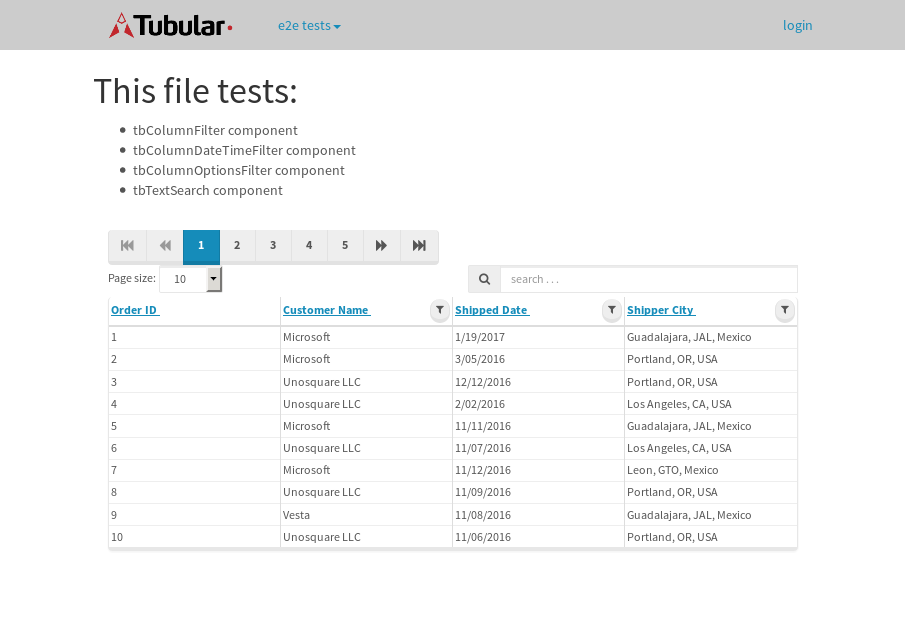
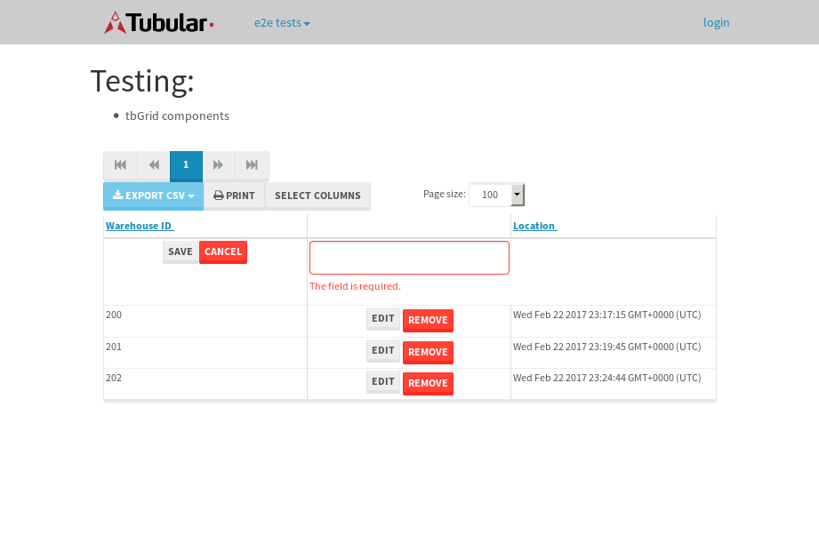

tbColumn.Grid Sorting - 26.574sTests: 5Skipped: 0Failures: 0 should sort data in ascending order then on descending order when sorting by Order Id column - 5.311sTests passed: 100.00%should order data in ascending order when click-sorting an unsorted text column - 4.914sTests passed: 100.00%should order data in descending order when click-sorting an ascending-sorted text column - 5.587sTests passed: 100.00%should order data in ascending order when click-sorting an unsorted date column - 5.384sTests passed: 100.00%should order data in descending order when click-sorting twice an unsorted date column - 5.377sTests passed: 100.00%
tbEmptyForm - 3.372sTests: 3Skipped: 0Failures: 0 should have an empty required field - 0.763sTests passed: 100.00%should not be able to click on save - 0.503sTests passed: 100.00%should load default value for numeric field - 0.462sTests passed: 100.00%
Tubular Filters.tbColumnFilter - 107.596sTests: 12Skipped: 0Failures: 0 should cancel filtering when clicking outside filter-popover - 8.615sTests passed: 100.00%should disable Value text-input for "None" filter - 6.759sTests passed: 100.00%should disable apply button for "None" filter - 7.32sTests passed: 100.00%should decorate popover button when showing data is being filtered for its column - 11.855sTests passed: 100.00%should correctly filter data for the "Equals" filtering option - 7.91sTests passed: 100.00%should correctly filter data for the "Not Equals" filtering option - 8.27sTests passed: 100.00%should correctly filter data for the "Contains" filtering option - 8.891sTests passed: 100.00%should correctly filter data for the "Not Contains" filtering option - 8.439sTests passed: 100.00%should correctly filter data for the "Starts With" filtering option - 7.025sTests passed: 100.00%should correctly filter data for the "Not Starts With" filtering option - 7.08sTests passed: 100.00%should correctly filter data for the "Ends With" filtering option - 6.992sTests passed: 100.00%should correctly filter data for the "Not Ends With" filtering option - 7.261sTests passed: 100.00%
Tubular Filters.tbColumnDateTimeFilter - 136.879sTests: 12Skipped: 0Failures: 1 should cancel filtering when clicking outside filter-popover - 7.405sTests passed: 100.00%should disable Value text-input for "None" filter - 7.008sTests passed: 100.00%should disable apply button for "None" filter - 6.847sTests passed: 100.00%should clear filtering when clicking on Clean button - 17.725sExpected false to be true.✗Tests passed: 0.00%should decorate popover button when showing data is being filtered for its column - 12.066sTests passed: 100.00%should correctly filter data for the "Equals" filtering option - 6.844sTests passed: 100.00%should correctly filter data for the "Not Equals" filtering option - 7.628sTests passed: 100.00%should correctly filter data for the "Between" filtering option - 12.642sTests passed: 100.00%should correctly filter data for the "Greater-or-equal" filtering option - 11.945sTests passed: 100.00%should corretlly filter data for the "Greater" filtering option - 12.132sTests passed: 100.00%should correctly filter data for the "Less-or-equal" filtering option - 12.033sTests passed: 100.00%should correctly filter data for the "Less" filtering option - 11.744sTests passed: 100.00%
Tubular Filters.tbColumnOptionsFilter - 81.045sTests: 3Skipped: 0Failures: 0 should cancel filtering when clicking outside filter-popover - 8.48sTests passed: 100.00%should decorate popover button when showing data is being filtered for its column - 12.294sTests passed: 100.00%should filter column-elements in accordance to the selected filter when selecting a single option - 49.385sTests passed: 100.00%
Tubular Filters.tbTextSearch - 49.184sTests: 5Skipped: 0Failures: 0 min-chars is not set - 1.176sTests passed: 100.00%should filter data in searchable-column customer name to matching inputted text, starting from 3 characters - 7.318sTests passed: 100.00%should filter data in searchable-column shipper city to matching inputted text, starting from 3 characters - 12.232sTests passed: 100.00%should show clear button when there is inputted text only - 6.829sTests passed: 100.00%should clear filtering when clicking clear button - 16.336sTests passed: 100.00%
tbForm related components.tbCheckboxField - 6.446sTests: 2Skipped: 0Failures: 0 should save changes on "SAVE" - 2.718sTests passed: 100.00%should discard changes on "CANCEL" - 2.275sTests passed: 100.00%
tbForm related components.tbDropDownEditor - 14.871sTests: 5Skipped: 0Failures: 0 should set initial input value to the value of "value" attribute when defined - 2.653sTests passed: 100.00%should show the component name value in a label field when "showLabel" attribute is true - 2.058sTests passed: 100.00%should show a help field equal to this attribute, is present - 2.303sTests passed: 100.00%should submit modifications to item/server when clicking form "Save" - 3.961sTests passed: 100.00%should NOT submit modifications to item/server when clicking form "Cancel" - 2.811sTests passed: 100.00%
tbForm related components.tbTextArea - 18.812sTests: 7Skipped: 0Failures: 0 should set initial input value to the value of "value" attribute when defined - 2.129sTests passed: 100.00%should be invalidated when the number of chars is not in the range of "min" and "max" attributes - 3.338sTests passed: 100.00%should show the component name value in a label field when "showLabel" attribute is true - 1.896sTests passed: 100.00%should show a help field equal to this attribute, is present - 1.846sTests passed: 100.00%should require the field when the attribute "required" is true - 2.786sTests passed: 100.00%should submit modifications to item/server when clicking form "Save" - 3.61sTests passed: 100.00%should NOT submit modifications to item/server when clicking form "Cancel" - 2.382sTests passed: 100.00%
tbForm related components.tbDateEditor - 18.248sTests: 6Skipped: 0Failures: 0 should set initial date value to the value of "value" attribute when defined - 2.691sTests passed: 100.00%should be invalidated when the date is not in the range of "min" and "max" attributes - 2.998sTests passed: 100.00%should show the component name value in a label field when "showLabel" attribute is true - 3.013sTests passed: 100.00%should show a help field equal to this attribute, is present - 1.986sTests passed: 100.00%should submit modifications to item/server when clicking form "Save" - 2.927sTests passed: 100.00%should NOT submit modifications to item/server when clicking form "Cancel" - 3.564sTests passed: 100.00%
tbForm related components.tbTypeaheadEditor - 20.989sTests: 7Skipped: 0Failures: 0 should show an options list when there is an API-info/component entered-data - 2.435sTests passed: 100.00%should select the option clicked - 2.454sTests passed: 100.00%should show a "delete" button when an option/match is selected, and delete the option if button is clicked - 2.829sTests passed: 100.00%should show a label value equal to the component name when "showLabel" attribue is true - 2.297sTests passed: 100.00%should require a value when "require" attribute is true - 2.843sTests passed: 100.00%should submit modifications to item/server when clicking form "Save" - 3.406sTests passed: 100.00%should NOT submit modifications to item/server when clicking form "Cancel" - 3.184sTests passed: 100.00%
tbForm related components.tbSimpleEditor - 20.171sTests: 9Skipped: 0Failures: 0 should set initial input value to the value of "value" attribute when defined - 1.978sTests passed: 100.00%should be invalidated when the number of chars is not in the range of "min" and "max" attributes - 2.347sTests passed: 100.00%should show the component name value in a label field when "showLabel" attribute is true - 2.121sTests passed: 100.00%should set input placeholder to the value of "placeholder" attribute - 1.948sTests passed: 100.00%should validate the control using the "regex" attribute, if present - 1.883sTests passed: 100.00%should show a help field equal to this attribute, is present - 1.654sTests passed: 100.00%should require the field when the attribute "required" is true - 2.408sTests passed: 100.00%should submit modifications to item/server when clicking form "Save" - 2.966sTests passed: 100.00%should NOT submit modifications to item/server when clicking form "Cancel" - 2.084sTests passed: 100.00%
tbForm related components.tbNumericEditor - 18.542sTests: 7Skipped: 0Failures: 0 should set initial component value to the value of "value" attribute when defined - 2.292sTests passed: 100.00%should be invalidated when the entered number is not in the range of "min" and "max" attributes - 3.187sTests passed: 100.00%should show the component name value in a label field when "showLabel" attribute is true - 1.992sTests passed: 100.00%should show a help field equal to this attribute, is present - 1.95sTests passed: 100.00%should require the field when the attribute "required" is true - 3.001sTests passed: 100.00%should submit modifications to item/server when clicking form "Save" - 3.246sTests passed: 100.00%should NOT submit modifications to item/server when clicking form "Cancel" - 2.106sTests passed: 100.00%
tbForm Connection Error NoModelKey - 4.273sTests: 1Skipped: 0Failures: 0 tbForm connection error functionality - 0.544sTests passed: 100.00%
tbForm Connection Error NoServerUrl - 3.257sTests: 1Skipped: 0Failures: 0 tbForm connection error functionality - 0.608sTests passed: 100.00%
tbGridComponents - 9.813sTests: 6Skipped: 0Failures: 2 should add item with newRow method - 3.255sTests passed: 100.00%should add item with newRow method and cancel action - 0.905sExpected true to be false, 'should remove the added row if canceled'.✗Tests passed: 50.00%should update item with tbSaveButton - 0.828sFailed: ElementNotVisibleError✗Tests passed: 0.00%should NOT update item on cancel Update action - 0.999sTests passed: 100.00%should remove item with tbRemoveButton - 1.281sTests passed: 100.00%should NOT remove item on cancel Remove action - 1.078sTests passed: 100.00%
tbGridPager.navigation buttons - 10.73sTests: 1Skipped: 0Failures: 0 should perform no action when clicking on the numbered navigation button corresponding to the current-showing results page - 1.591sTests passed: 100.00%
tbGridPager.navigation buttons.first/non-last results page related functionallity - 4.212sTests: 2Skipped: 0Failures: 0 should disable "first" and "previous" navigation buttons when in first results page - 2.023sTests passed: 100.00%should enable "last" and "next" navigation buttons when in a results page other than last - 2.188sTests passed: 100.00%
tbGridPager.navigation buttons.last/non-first results page related functionallity - 4.927sTests: 2Skipped: 0Failures: 0 should disable "last" and "next" navigation buttons when in last results page - 2.357sTests passed: 100.00%should enable "first" and "previous" navigation buttons when in a results page other than first - 2.569sTests passed: 100.00%
tbGridPager.page navigation - 8.607sTests: 5Skipped: 0Failures: 0 should go to next results page when clicking on next navigation button - 2.234sTests passed: 100.00%should go to previous results page when clicking on previous navigation button - 1.579sTests passed: 100.00%should go to last results page when clicking on last navigation button - 1.513sTests passed: 100.00%should go to first results page when clicking on first navigation button - 1.477sTests passed: 100.00%should go to corresponding results page when clicking on a numbered navigation button - 1.803sTests passed: 100.00%
tbGridPagerInfo - 4.875sTests: 2Skipped: 0Failures: 0 should show text in accordance to numbered of filter rows and current results-page - 1.411sTests passed: 100.00%should show count in footer - 0.558sTests passed: 100.00%
tbHttp - 19.273sTests: 8Skipped: 1Failures: 1 should be authenticated - 2.608sTests passed: 100.00%retrieve data - 3.854sTests passed: 100.00%should not login bad credentials - 2.495sExpected '' to be 'false'.✗Tests passed: 0.00%should have a refresh token - 2.789sTests passed: 100.00%should remove authentication - 2.55sTests passed: 100.00%get method-Is not authenticated - 2.515sTests passed: 100.00%post method-Is not authenticated - 2.461sTests passed: 100.00%should regenerate access token on post - 0s***Skipped***Tests passed: 0%
tbPageSizeSelctor - 12.291sTests: 4Skipped: 0Failures: 0 should filter up to 10 data rows per page when selecting a page size of "10" - 2.482sTests passed: 100.00%should filter up to 20 data rows per page when selecting a page size of "20" - 1.919sTests passed: 100.00%should filter up to 50 data rows per page when selecting a page size of "50" - 3.144sTests passed: 100.00%should filter up to 100 data rows per page when selecting a page size of "100" - 2.918sTests passed: 100.00%
tbRowSelectable - 11.455sTests: 2Skipped: 0Failures: 0 selected rows - 5.881sTests passed: 100.00%unselected rows - 3.841sTests passed: 100.00%
tbSingleForm - 19.697sTests: 8Skipped: 1Failures: 0 should load correct info - 0s***Skipped***Tests passed: 0%should change customer name - 2.389sTests passed: 100.00%should save it - 3.201sTests passed: 100.00%should clear the inputs - 3.794sTests passed: 100.00%should update - 2.637sTests passed: 100.00%should reset editor - 2.889sTests passed: 100.00%should not save if not Changes - 2.358sTests passed: 100.00%should not be able to click on save - 2.429sTests passed: 100.00%


{kind=link}
{kind=link}